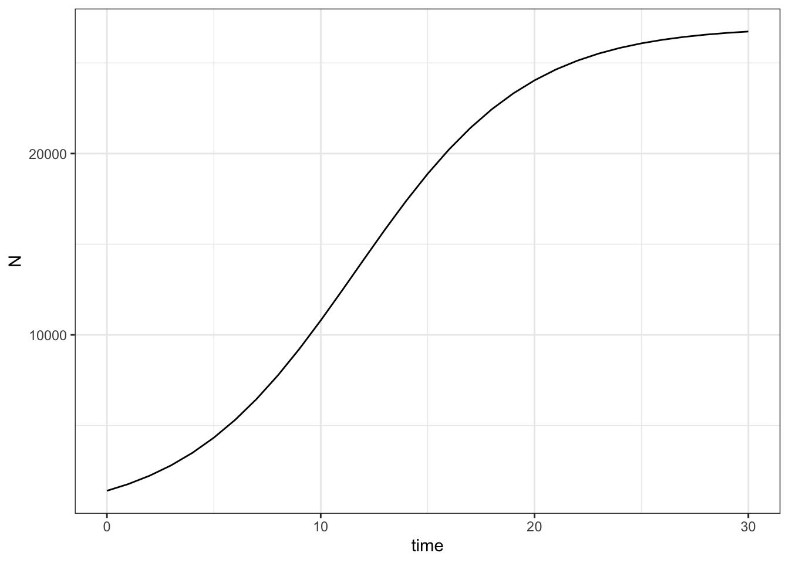

8 Density-dependence in population growth

8.1 Goals
In this chapter, you’ll learn how we represent crowding in populations. Per capita population growth rate often depends on population density. Along the way, you’ll learn we take ideas seriously, and follow them to their logical conclusions.
If you successfully complete this chapter, you will
- extend exponential growth to include the effect of crowding,
- define density-dependence,
- distinguish between transient dynamics and long-term asymptotic dynamics, and
- discover the consequences of crowding by solving a rate equation.
8.2 Preparatory steps
- Watch the lecture videos on density-dependent population growth (parts 1 & 2). These videos assume that you watched the preceding population ecology videos.
- Find out what you need for the deliverables.

8.3 Models as assumptions
Continuous logistic population growth is just a set of assumptions about how a population grows. The rate of change in our population is determined by its birth rate and death rate, and how population size affects these.
The symbol \(dN/dt\) means “change in population size (N) per unit change in time (t)”.
Recall exponential growth (J-shaped growth) is \[\frac{dN}{dt} = rN\]
Logistic growth adjusts exponential growth by penalizing it for population size.
\[\frac{dN}{dt} = rN\left(1-\alpha N \right)\]
where \(\alpha\) is a small number much less than one, and it is the effect of one individual on the growth rate of the population. Thus, as \(N\) gets bigger, \(\alpha N \rightarrow 1\) (approaches 1), and \(1-1=0\).
You see that in Figure 8.3, the growth rate slows dramatically as the population size approaches some limit. We call that limit the carrying capacity of the population, and it is determined by the effects of individuals on the population growth rate, or \(\alpha\).
8.3.1 Math describes nature: on parameters and their meanings
Often, we can describe a biological process in several different mathematical ways. Density-dependence in logistic growth is one such case.
We can define logistic growth in two ways that are opposite sides of the same coin. Above, we used \(\alpha\) to quantify the average effect of one individual on the growth rate of the population. Another common way to define logistic growth is by the consequences of these average individual effects: the carrying capacity which we call \(K\). It turns out that the carrying capacity is the inverse of the effect of an individual, so that \[K = \frac{1}{\alpha}\] and as a result we can rewrite logistic growth as \[\frac{dN}{dt} = rN\left(1-\frac{ N}{K} \right)\]
which is exactly equivalent to the first version we described above.
8.3.2 Solving a rate equation
We solve a rate equation in order to learn something about it’s asymptotic behavior. By “learn something” we mean figure out what will determine the size of population. By “asymptotic”, we mean really, really, long-term. We hope to find out what will eventually happen to the population and what will control it’s destiny.
Another way to think about this is that we are seeking to find the equilibrium state, the state of the population toward which the population will tend to move. Imagine a marble in a wok or bowl. The marble will tend to move toward the bottom. When it finally settles down and stops moving, it is at its equilibrium state.
We solve a rate equation by setting it equal to zero, because we want to understand what determines when the population stops changing.
8.3.3 Assignment 1: Use math to understand the consequences of our assumptions.
Now solve for the equilibrium, when \(dN/dt = 0\). That is, let
\[0 = rN\left(1-\alpha N\right)\]
and solve for \(N\). That is, rearrange to get \(N\) on the left side \(N=\) and other stuff on the right side, and then simplify. SHOW ALL THE STEPS IN YOUR WORK.
8.4 Discrete difference equations
Sometimes, it is simpler to think about rate equations in a step-wise annual fashion, where each change is a discrete step, rather than continuous change.
N (this year) = N (last year) + births - deaths
In this case, the rate of change is a difference between \(N\) this year versus last year,
N (this year) - N (last year) = \(\Delta\)N = births - deaths
In this situation, we call this a difference equation.
The difference equation for logistic growth is
\[N_t - N_{t-1} = \Delta N = r_d N_{t-1}\left(1- \alpha N_{t-1}\right)\]
where the number of births and deaths is described by \(r_d N_{t-1}\left(1-N_{t-1}/K\right)\).
Notice an important feature of this equation: the density-dependence \((1-\alpha N_{t-1})\) depends on the size of the population at one point in time (\(t-1\)), but the population is projected out past this time. As a result, the dampening or slowly effect of density is delayed, always lagging behind just a little bit. You will investigate the consequences of this in your exrecise.
We can project the population dynamics using
\[N_t = N_{t-1} +r_d N_{t-1}\left(1-\alpha N_{t-1}\right)\]
8.4.1 Assignment 2: Explore delayed density-dependence
Here you will explore the consequences delayed density-dependence. In this exercise, you will discover stable points in a stable limit cycle. These stable points are the values of \(N\) to which a population returns.
You will also discover mathematical chaos. In science, chaos is defined as a deterministic, non-repeating pattern that is bounded, and characterized by sensitivity to initial conditions.
In the code below, you will do several things. First, we set up things that won’t change,
- the carrying capacity (\(K=100\)),
- the number of generations (50).
- an empty vector that will eventually hold all of our values of \(N\).
- the initial size of the population. For simplicity, keep this between 40 and 70.
Next we do things to investigate the consequences of delayed density-dependence. Here we investigate what happens when populations grow slowly (small \(r_d\)) vs. quickly (large \(r_d\)).
You will do these things four times.
- Select a value of \(r_d\). Pick four different values for rd , one each between
- 0.2 and 1.5,
- 2.1 and 2.4,
- 2.45 - 2.56
- 2.7- 3.
- For your first value of \(r_d\), project the dynamics, graph the time series of the dynamics, and save the graph under a unique name.
- Repeat for the second, third, and fourth values of \(r_d\).
When you are finished, you should have four graphs that each use a different value of \(r_d\) and each should look quite different.
Step 1 Set up things that won’t change.
## Define K, N0, the number of generations
K <- 100
gens <- 50
## make numeric vector for each N in each generation, plus one more
N <- numeric(gens)
## Start the population out at this number of individuals
N[1] <- 45Select a value of \(r_d\) and use a for-loop to project the population through time, from one year to the next.
############################################
## THIS IS WHERE YOU PICK THE VALUE OF rd YOU WANT
rd <- 0.2
############################################
## project the population
for(t in 2:gens) {
N[t] <- N[t-1] + N[t-1]*rd*(1-N[t-1]/K)
}
# store this result in a data frame
my.N <- data.frame(year=1:gens, N=N)
#for kicks, look at rows 1-3.
my.N[1:3,] year N
1 1 45.00
2 2 49.95
3 3 54.95Graph the time series of the population dynamics, and change the name of the file that you save using ggsave().
## graph your data
ggplot(data=my.N, aes(x=year, y=N )) +
geom_point() +
geom_line() +
labs(title = "Discrete Logistic Growth",
subtitle=paste("rd =", rd))
## save your graph USING A UNIQUE NAME
ggsave("dynamics-rd-0.2.png", height=5, width=6)Put into one document your four graphs, and a description of how the graphs differ, including
- the relationship between \(r_d\) and the year in which the carrying capacity is reached or exceeded,
- the predictability of the dynamics, and
- the number of stable points to which the population returns.
8.5 Deliverables
Put your work from section 8.3 (Assignment 1) and section 8.4 (Assignment 2) into one document and turn in by the due date.